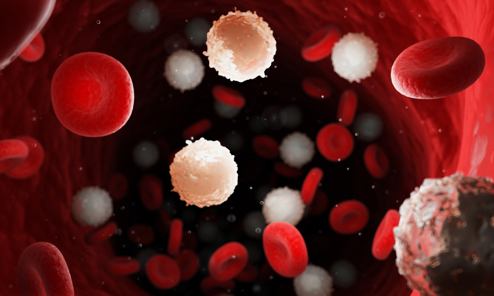

DOENÇAS HEMATOLÓGICAS
Introdução
As doenças hematológicas comprometem a produção de componentes do sangue, logo, comprometendo as hemácias. Aqui, iremos ver um pouco mais sobre essas enfermidades e suas complicações ao corpo humano!
Você sabia que a anemia é uma doença hematológica? Alterações e carências no funcionamento das hemácias podem ocasionar algumas complicações; vamos ver abaixo algumas delas!

HEMOLÍTICAS
- Anemia Falciforme

A anemia falciforme tem origem hereditária, sua presença pode ocasionar uma expectativa de vida baixa, dor nos ossos e articulações e pele amarelada. Sua causa é a alteração nos glóbulos vermelhos (hemácias).
- Anemia Férrica

Tipo mais comum, causada pela ausência de ferro no organismo, pode se manifestar no inchaço na língua, unhas quebradiças (ou em formato de colher), rachaduras e úlceras no canto da boca e até desejo por consumir substâncias não alimentares (terra por exemplo)
A falta de ferro acarreta na dificuldade na produção de hemácias, essas necessárias para que o corpo possa produzir hemoglobina.
- Anemia perniciosa

Ocasionada pela incapacidade do corpo de produzir o "fator intrínseco", uma proteína ligada à vitamina B12. Esta carência geralmente está relacionada a questões alimentares.
Entre seus sintomas, estão: fraqueza muscular, reflexos lentos e perda de equilíbrio.
- Anemia aplástica
Ocorre como reação a redução de células sanguíneas produzidas na medula óssea, por danos à células tronco. Pode ocasionar sangramento nasal, sangramento na gengiva, equimoses espontâneas, e o aumento da frequência e gravidade de infecções.

- Anemia Férrica